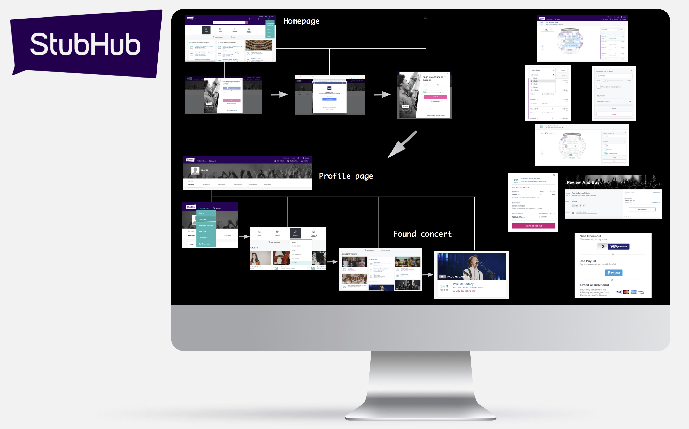
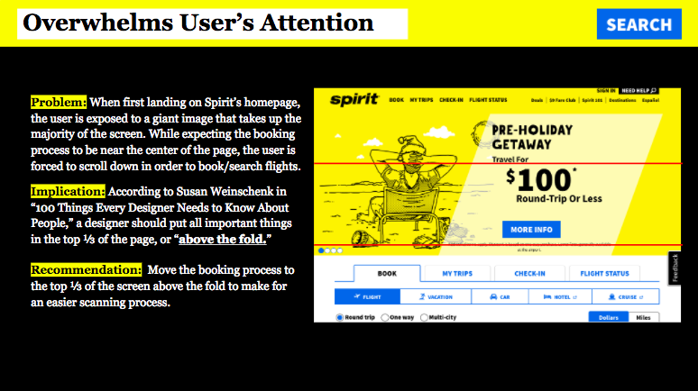

Conducting competitive analysis on four major StubHub competitors: SeatGeek, VividSeats, Ticket Liquidator, and Razorgator Tickets. I created a competitive matrix in order to compare each of the 5 different sites across 16 different attributes.. Click here for PDF
Helped put together requirements the dynamic FourSquare creatives (categories, distance from kiosk, etc.) Watched creatives play on in-office Link kiosk to test functionality and usability. Throughout the duration of the summer, I communicated with other teams across the US to design and execute multiple versions of this creative for the dynamic campaign.

Utilized Adobe Illustrator to design the interface for an ordering application for an in-store iPad kiosk for Unicorn Bubble Tea.
Tasked with researching the percentage of people below the poverty line in each NYC zip code. Established a poverty threshold for each zip code of anything above 25%, and consequently ran A/B tests in 27 out of the 67 NYC zip codes in order to improve the significance of results. Ran A/B tests on these Link kiosks, displaying creatives with varying text and images. Analyzed results using a heat map of Aunt Bertha searches on the Link tablets in order to gain insight to which version of the creative was most effective

The Beauty section of the Macy’s website is divided into seven subcategories: Makeup, Skin Care, Beauty Brands, Additional Beauty, Impulse Brands, Fragrance, and Fragrance Brands. Through my own experience, I found that the subcategories are not organized in a way that is easy to navigate through when looking for specific beauty products. I conducted a closed card sort on seven participants in order to further evaluate the efficiency of the existing categories. Based on my findings, I created a sitemap to exemplify my recommendation for a new method of categorizing based on my findings.